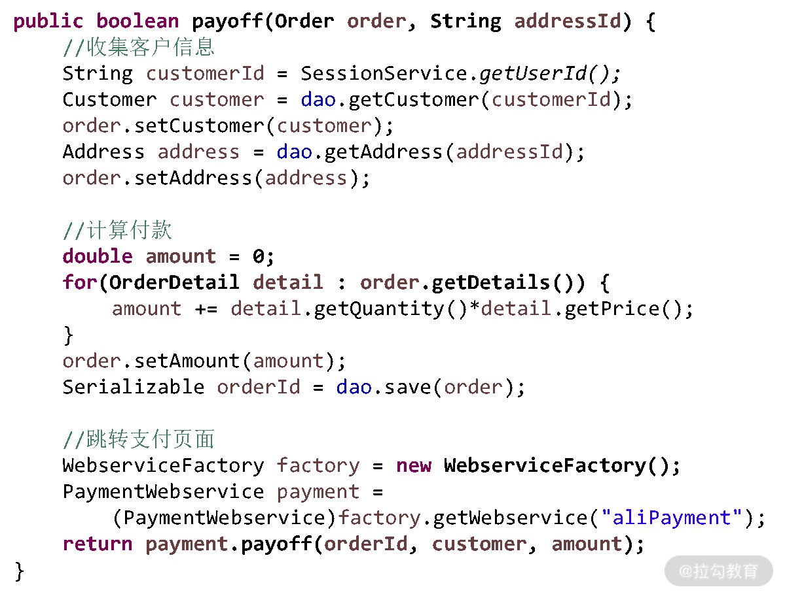
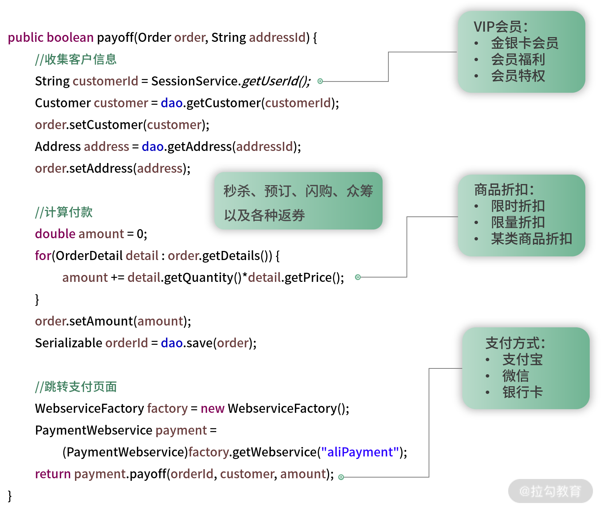
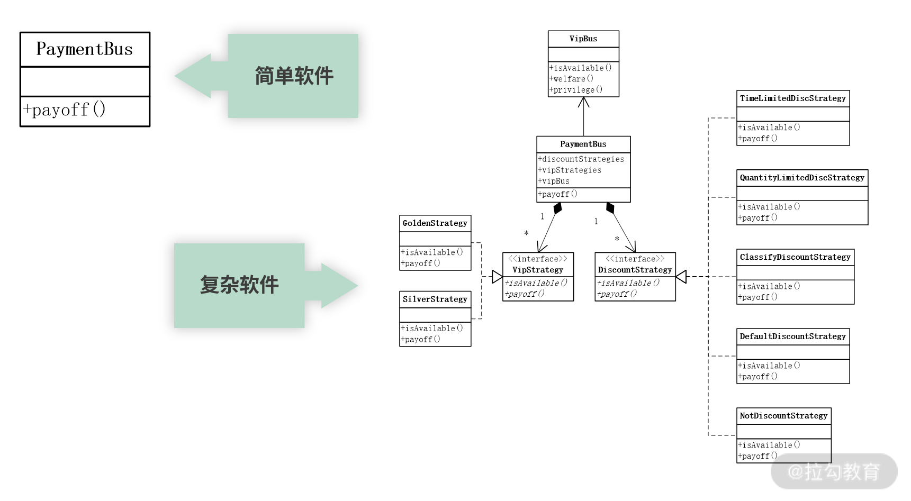
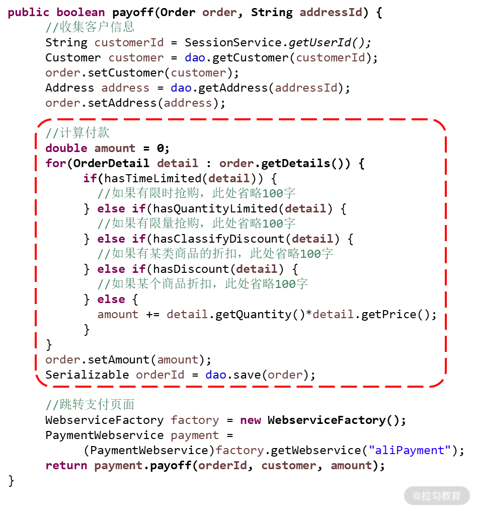
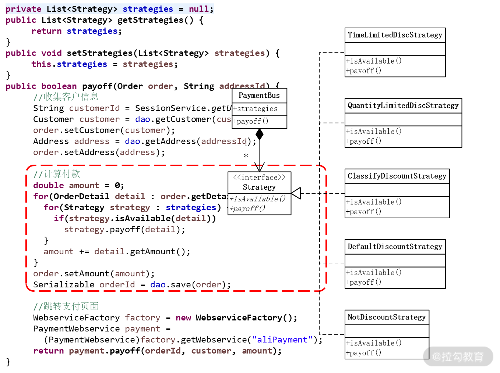
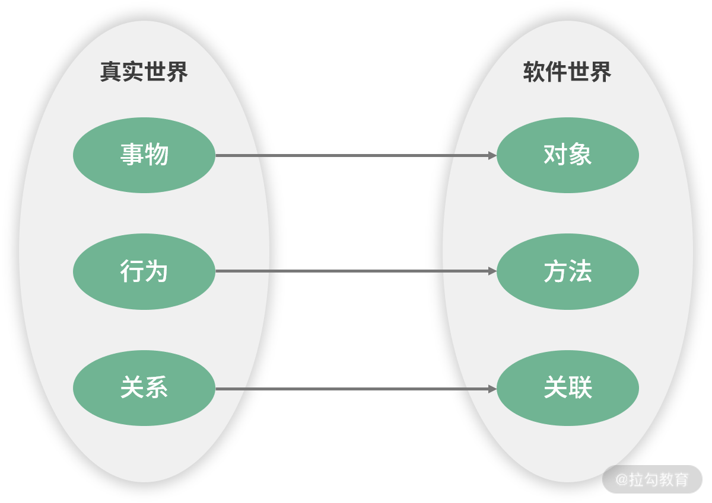

- 00 开篇词 让我们把 DDD 的思想真正落地.md.html
- 01 DDD ：杜绝软件退化的利器.md.html
- 02 以电商支付功能为例演练 DDD.md.html
- 03 DDD 是如何落地到数据库设计的？.md.html
- 04 领域模型是如何指导程序设计的？.md.html
- 05 聚合、仓库与工厂：傻傻分不清楚.md.html
- 06 限界上下文：冲破微服务设计困局的利器.md.html
- 07 在线订餐场景中是如何开事件风暴会议的？.md.html
- 08 DDD 是如何解决微服务拆分难题的？.md.html
- 09 DDD 是如何落地微服务设计实现的？.md.html
- 10 微服务落地的技术实践.md.html
- 11 解决技术改造困局的钥匙：整洁架构.md.html
- 12 如何设计支持快速交付的技术中台战略？.md.html
- 13 如何实现支持快速交付的技术中台设计？.md.html
- 14 如何设计支持 DDD 的技术中台？.md.html
- 15 如何设计支持微服务的技术中台？.md.html
- 16 基于 DDD 的代码设计演示（含 DDD 的技术中台设计）.md.html
- 17 基于 DDD 的微服务设计演示（含支持微服务的 DDD 技术中台设计）.md.html
- 18 基于事件溯源的设计开发.md.html
01 DDD ：杜绝软件退化的利器
2004 年，软件大师 Eric Evans 的不朽著作《领域驱动设计：软件核心复杂性应对之道》面世，从书名可以看出，这是一本应对软件系统越来越复杂的方法论的图书。然而，在当时，中国的软件业才刚刚起步，软件系统还没有那么复杂，即使维护了几年，软件退化了，不好维护了，推倒重新开发就好了。因此，在过去的那么多年里，真正运用领域驱动设计开发（DDD）的团队并不多。一套优秀的方法论，因为现实阶段原因而一直不温不火。
不过，这些年随着中国软件业的快速发展，软件规模越来越大，生命周期也越来越长，推倒重新开发的风险越来越大。这时，软件团队急切需要在较低成本的状态下持续维护一个系统很多年。然而，事与愿违。随着时间的推移，程序越来越乱，维护成本越来越高，软件退化成了无数软件团队的噩梦。
这时，微服务架构成了规模化软件的解决之道。不过，微服务对设计提出了很高的要求，强调“小而专、高内聚”，否则就不能发挥出微服务的优势，甚至可能令问题更糟糕。
因此，微服务的设计，微服务的拆分都需要领域驱动设计的指导。那么，领域驱动为什么能解决软件规模化的问题呢？ 我们先从问题的根源谈起，即软件退化。
软件退化的根源
最近 10 年的互联网发展，从电子商务到移动互联，再到“互联网+”与传统行业的互联网转型，是一个非常痛苦的转型过程。而近几年的人工智能与 5G 技术的发展，又会带动整个产业向着大数据与物联网发展，另一轮的技术转型已经拉开帷幕。
那么，在这个过程中，一方面会给我们带来诸多的挑战，另一方面又会给我们带来无尽的机会，它会带来更多的新兴市场、新兴产业与全新业务，给我们带来全新的发展机遇。
然而，在面对全新业务、全新增长点的时候，我们能不能把握住这样的机遇呢？我们期望能把握住，但每次回到现实，回到正在维护的系统时，却令人沮丧。我们的软件总是经历着这样的轮回，软件设计质量最高的时候是第一次设计的那个版本，当第一个版本设计上线以后就开始各种需求变更，这常常又会打乱原有的设计。
因此，需求变更一次，软件就修改一次，软件修改一次，质量就下降一次。不论第一次的设计质量有多高，软件经历不了几次变更，就进入一种低质量、难以维护的状态。进而，团队就不得不在这样的状态下，以高成本的方式不断地维护下去，维护很多年。
这时候，维护好原有的业务都非常不易，又如何再去期望未来更多的全新业务呢？比如，这是一段电商网站支付功能的设计，最初的版本设计质量还是不错的：

当第一个版本上线以后，很快就迎来了第一次变更，变更的需求是增加商品折扣功能，并且这个折扣功能还要分为限时折扣、限量折扣、某类商品的折扣、某个商品的折扣。当我们拿到这个需求时怎么做呢？很简单，增加一个 if 语句，if 限时折扣就怎么怎么样，if 限量折扣就怎么怎么样……代码开始膨胀了。
接着，第二次变更需要增加 VIP 会员，除了增加各种金卡、银卡的折扣，还要为会员发放各种福利，让会员享受各种特权。为了实现这些需求，我们又要在 payoff() 方法中加入更多的代码。
第三次变更增加的是支付方式，除了支付宝支付，还要增加微信支付、各种银行卡支付、各种支付平台支付，此时又要塞入一大堆代码。经过这三次变更，你可以想象现在的 payoff() 方法是什么样子了吧，变更是不是就可以结束了呢？其实不能，接着还要增加更多的秒杀、预订、闪购、众筹，以及各种返券。程序变得越来越乱而难以阅读，每次变更也变得越来越困难。

问题来了：为什么软件会退化，会随着变更而设计质量下降呢？在这个问题上，我们必须寻找到问题的根源，才能对症下药、解决问题。
要探寻软件退化的根源，先要从探寻软件的本质及其规律开始，软件的本质就是对真实世界的模拟，每个软件都能在真实世界中找到它的影子。因此，软件中业务逻辑正确与否的唯一标准就是是否与真实世界一致。如果一致，则软件是 OK 的；不一致，则用户会提 Bug、提新需求。
在这里发现了一个非常重要的线索，那就是，软件要做成什么样，既不由我们来决定，也不由用户来决定，而是由客观世界决定。用户为什么总在改需求，是因为他们也不确定客观世界的规则，只有遇到问题了他们才能想得起来。因此，对于我们来说，与其唯唯诺诺地按照用户的要求去做软件，不如主动地理解业务的基础上去分析软件，而后者会更有利于我们减少变更的成本。
那么，真实世界是怎样，我们就怎样开发软件，不就简单了吗？其实并非如此，因为真实世界是非常复杂的，要深刻理解真实世界中的这些业务逻辑是需要一个过程的。因此，我们最初只能认识真实世界中那些简单、清晰、易于理解的业务逻辑，把它们做到我们的软件里，即每个软件的第一个版本的需求总是那么清晰明了、易于设计。
然而，当我们把第一个版本的软件交付用户使用的时候，用户却会发现，还有很多不简单、不明了、不易于理解的业务逻辑没做到软件里。这在使用软件的过程中很不方便，和真实业务不一致，因此用户就会提 Bug、提新需求。
在我们不断地修复 Bug，实现新需求的过程中，软件的业务逻辑也会越来越接近真实世界，使得我们的软件越来越专业，让用户感觉越来越好用。但是，在软件越来越接近真实世界的过程中，业务逻辑就会变得越来越复杂，软件规模也越来越庞大。
你一定有这样一个认识：简单软件有简单软件的设计，复杂软件有复杂软件的设计。
比如，现在的需求就是将用户订单按照“单价 × 数量”公式来计算应付金额，那么在一个 PaymentBus 类中增加一个 payoff() 方法即可，这样的设计没有问题。不过，如果现在的需求需要在付款的过程中计算各种折扣、各种优惠、各种返券，那么我们必然会做成一个复杂的程序结构。

但是，真实情况却不是这样的。真实情况是，起初我们拿到的需求是那个简单需求，然后在简单需求的基础上进行了设计开发。但随着软件的不断变更，软件业务逻辑变得越来越复杂，软件规模不断扩大，逐渐由一个简单软件转变成一个复杂软件。
这时，如果要保持软件设计质量不退化，就应当逐步调整软件的程序结构，逐渐由简单的程序结构转变为复杂的程序结构。如果我们总是这样做，就能始终保持软件的设计质量，不过非常遗憾的是，我们以往在维护软件的过程中却不是这样做的，而是不断地在原有简单软件的程序结构下，往 payoff() 方法中塞代码，这样做必然会造成软件的退化。
也就是说，软件退化的根源不是软件变更，软件变更只是一个诱因。如果每次软件变更时，适时地进行解耦，进行功能扩展，再实现新的功能，就能保持高质量的软件设计。但如果在每次软件变更时没有调整程序结构，而是在原有的程序结构上不断地塞代码，软件就会退化。这就是软件发展的规律，软件退化的根源。
杜绝软件退化：两顶帽子
前面谈到，要保持软件设计质量不退化，必须在每次需求变更的时候，对原有的程序结构适当地进行调整。那么应当怎样进行调整呢？还是回到前面电商网站付款功能的那个案例，看看每次需求变更应当怎样设计。
在交付第一个版本的基础上，很快第一次需求变更就到来了。第一次需求变更的内容如下。
增加商品折扣功能，该功能分为以下几种类型：
- 限时折扣
- 限量折扣
- 对某类商品进行折扣
- 对某个商品进行折扣
- 不折扣
以往我们拿到这个需求，就很不冷静地开始改代码，修改成了如下一段代码：

这里增加了一段 if 语句，并不是一种好的变更方式。如果每次都这样变更，那么软件必然就会退化，进入难以维护的状态。这种变更为什么就不好呢？因为它违反了“开放-封闭原则”。
开放-封闭原则（OCP） 分为开放原则与封闭原则两部分。
- 开放原则：我们开发的软件系统，对于功能扩展是开放的（Open for Extension），即当系统需求发生变更时，可以对软件功能进行扩展，使其满足用户新的需求。
- 封闭原则：对软件代码的修改应当是封闭的（Close for Modification），即在修改软件的同时，不要影响到系统原有的功能，所以应当在不修改原有代码的基础上实现新的功能。也就是说，在增加新功能的时候，新代码与老代码应当隔离，不能在同一个类、同一个方法中。
前面的设计，在实现新功能的同时，新代码与老代码在同一个类、同一个方法中了，违反了“开放-封闭原则”。怎样才能既满足“开放-封闭原则”，又能够实现新功能呢？在原有的代码上你发现什么都做不了！难道“开放-封闭原则”错了吗？
问题的关键就在于，当我们在实现新需求时，应当采用“两顶帽子”的方式进行设计，这种方式就要求在每次变更时，将变更分为两个步骤。
两顶帽子：
- 在不添加新功能的前提下，重构代码，调整原有程序结构，以适应新功能；
- 实现新的功能。
按以上案例为例，为了实现新的功能，我们在原有代码的基础上，在不添加新功能的前提下调整原有程序结构，我们抽取出了 Strategy 这样一个接口和“不折扣”这个实现类。这时，原有程序变了吗？没有。但是程序结构却变了，增加了这样一个接口，称为“可扩展点”。在这个可扩展点的基础上再实现各种折扣，既能满足“开放-封闭原则”来保证程序质量，又能够满足新的需求。当日后发生新的变更时，什么类型的折扣就修改哪个实现类，添加新的折扣类型就增加新的实现类，维护成本得到降低。

“两顶帽子”的设计方式意义重大。过去，我们每次在设计软件时总是担心日后的变更，就很不冷静地设计了很多所谓的“灵活设计”。然而，每一种“灵活设计”只能应对一种需求变更，而我们又不是先知，不知道日后会发生什么样的变更。最后的结果就是，我们期望的变更并没有发生，所做的设计都变成了摆设，它既不起什么作用，还增加了程序复杂度；我们没有期望的变更发生了，原有的程序依然不能解决新的需求，程序又被打回了原形。因此，这样的设计不能真正解决未来变更的问题，被称为“过度设计”。
有了“两顶帽子”，我们不再需要焦虑，不再需要过度设计，正确的思路应当是“活在今天的格子里做今天的事儿”，也就是为当前的需求进行设计，使其刚刚满足当前的需求。所谓的“高质量的软件设计”就是要掌握一个平衡，一方面要满足当前的需求，另一方面要让设计刚刚满足需求，从而使设计最简化、代码最少。这样做，不仅软件设计质量提高了，设计难点也得到了大幅度降低。
简而言之，保持软件设计不退化的关键在于每次需求变更的设计，只有保证每次需求变更时做出正确的设计，才能保证软件以一种良性循环的方式不断维护下去。这种正确的设计方式就是“两顶帽子”。
但是，在实践“两顶帽子”的过程中，比较困难的是第一步。在不添加新功能的前提下，如何重构代码，如何调整原有程序结构，以适应新功能，这是有难度的。很多时候，第一次变更、第二次变更、第三次变更，这些事情还能想清楚；但经历了第十次变更、第二十次变更、第三十次变更，这些事情就想不清楚了，设计开始迷失方向。
那么，有没有一种方法，让我们在第十次变更、第二十次变更、第三十次变更时，依然能够找到正确的设计呢？有，那就是“领域驱动设计”。
保持软件质量：领域驱动
前面谈到，软件的本质就是对真实世界的模拟。因此，我们会有一种想法，能不能将软件设计与真实世界对应起来，真实世界是什么样子，那么软件世界就怎么设计。如果是这样的话，那么在每次需求变更时，将变更还原到真实世界中，看看真实世界是什么样子的，根据真实世界进行变更。这样，日后不论怎么变更，经过多少轮变更，都按照这样的方法进行设计，就不会迷失方向，设计质量就可以得到保证，这就是“领域驱动设计”的思想。
那么，如何将真实世界与软件世界对应起来呢？这样的对应就包括以下三个方面的内容：
- 真实世界有什么事物，软件世界就有什么对象；
- 真实世界中这些事物都有哪些行为，软件世界中这些对象就有哪些方法；
- 真实世界中这些事物间都有哪些关系，软件世界中这些对象间就有什么关联。

真实世界与软件世界的对应图
在领域驱动设计中，就将以上三个对应，先做成一个领域模型，然后通过这个领域模型指导程序设计；在每次需求变更时，先将需求还原到领域模型中分析，根据领域模型背后的真实世界进行变更，然后根据领域模型的变更指导软件的变更，设计质量就可以得到提高。
总结
总之，软件发展的规律就是逐步由简单软件向复杂软件转变。简单软件有简单软件的设计，复杂软件有复杂软件的设计。因此，当软件由简单软件向复杂软件转变时，就需要通过两顶帽子适时地对程序结构进行调整，再实现新需求，只有这样才能保证软件不退化。然而，在变更的时候，如何调整代码以适应新的需求呢？
DDD 给了我们思路：在每次变更的时候，先回到领域模型，基于业务进行领域模型的变更。然后，再基于领域模型的变更，指导程序的变更。这样，不论经历多少次需求变更，始终能够保持设计质量不退化。这样的设计，才能保障系统始终在低成本的状态下，可持续地不断维护下去。